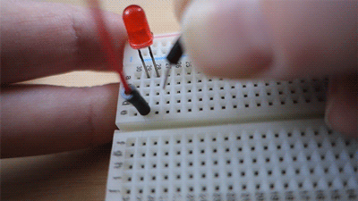
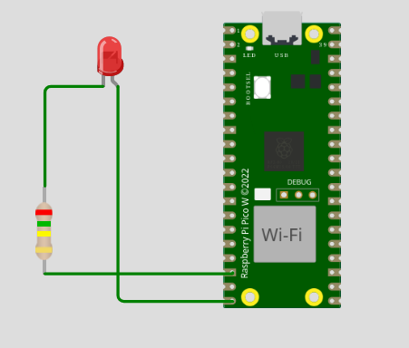

If you place a wire or component leg into one of these holes, it is electrically connected to the other holes in the same vertical group.
● e
│
● d
│
● c
│
● b
│
● a

TOP VIEW OF A BREADBOARD
==========================================
- | ● ● ● ● ● ● ● ● ● ● ● ● ● ● ● ● ● ● ● ●|Negative ← → = the power rails are connected horizontally.
+ | ● ● ● ● ● ● ● ● ● ● ● ● ● ● ● ● ● ● ● ●|Positive ← → = the power rails are connected horizontally.
==========================================
● ● ● ● ● ● ● ● ● ● ● ● ● ● ● ● ● ● ● ● ↓ ↓ ↓ ↓ ↓
● ● ● ● ● ● ● ● ● ● ● ● ● ● ● ● ● ● ● ●
● ● ● ● ● ● ● ● ● ● ● ● ● ● ● ● ● ● ● ● ↓ ↓ ↓ ↓ ↓ RAILS ARE ONLY CONNECTED VERTICALLY
● ● ● ● ● ● ● ● ● ● ● ● ● ● ● ● ● ● ● ●
● ● ● ● ● ● ● ● ● ● ● ● ● ● ● ● ● ● ● ● ↓ ↓ ↓ ↓ ↓
========================================= center
========================================= gutter
● ● ● ● ● ● ● ● ● ● ● ● ● ● ● ● ● ● ● ● ↓ ↓ ↓ ↓ ↓
● ● ● ● ● ● ● ● ● ● ● ● ● ● ● ● ● ● ● ●
● ● ● ● ● ● ● ● ● ● ● ● ● ● ● ● ● ● ● ● ↓ ↓ ↓ ↓ ↓ RAILS ARE ONLY CONNECTED VERTICALLY
● ● ● ● ● ● ● ● ● ● ● ● ● ● ● ● ● ● ● ●
● ● ● ● ● ● ● ● ● ● ● ● ● ● ● ● ● ● ● ● ↓ ↓ ↓ ↓ ↓
==========================================
+ | ● ● ● ● ● ● ● ● ● ● ● ● ● ● ● ● ● ● ● ●|Negative ← → = the power rails are connected horizontally.
- | ● ● ● ● ● ● ● ● ● ● ● ● ● ● ● ● ● ● ● ●|Positive ← → = the power rails are connected horizontally.
==========================================
A breadboard (also called a protoboard) lets you build electronic circuits without soldering. You can simply push component legs and jumper wires into the holes to create connections.
The + and - rails are connected horizontally. They are normally used to distribute electrical power across the breadboard.
The holes in the middle section of the breadboard are connected vertically, usually in groups of 5 holes.
The next column of holes is a separate connection and is not connected to the previous column.
The center gap (also called the gutter) separates the left side from the right side of the breadboard.
There is no electrical connection across the gutter. This allows integrated circuits (IC chips) to be placed across the middle without connecting the pins on opposite sides together.
the practice for Lesson 2: Connect and Control an LED Using a Raspberry Pi Pico GPIO Pin
MAKE small simple program for the the LED to SIGNAL S.O.S using the pi pico
